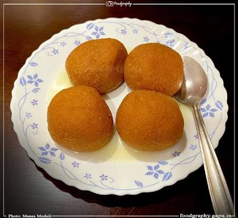

Niladri Bije — Jagannath's Offering to Goddess Laxmi
Odia Rasagulla
ଓଡ଼ିଆ ରସଗୋଲ୍ଲା
"ଫଳ ଲାଡ଼ୁ ରସ ଗୋଲ, ଦ୍ୱିଜ ଭୋଗ ପ୍ରଦ — ସ ହିଁ ପ୍ରସାଦ"
"Rasagola, sweet ball in syrup — offered to the wise, offered to the gods — that is prasad."
— Jagamohana Ramayana of Balaram Das, 15th century
The Odia Rasagulla is the original. Mentioned as "Rasagola" in the 15th-century Jagamohana Ramayana of Balaram Das and also in the Madala Panji temple chronicle, this sweet has been offered to Lord Jagannath at Puri since at least the 11th century. During the ritual of Niladri Bije — the Lord's return after Rath Yatra — he offers Rasagola to Goddess Laxmi to appease her. The Odia version uses caramelised sugar syrup giving it a characteristic pale golden-brown colour, distinct from the white Bengali variety.
Ingredients
- 1 litre full-fat cow milk
- 2 tbsp lemon juice (or white vinegar)
- 1 tsp fine semolina (sooji) — optional binder
- 1½ cups sugar
- 4 cups water
- 1 tsp cardamom powder
- ½ tsp rose water
- For Odia colour: 2 tbsp sugar + 1 tbsp water (for caramel)
Use only homemade chhena. Store-bought paneer does not give the right texture. The kneading step cannot be skipped.
Instructions
Bring milk to a boil on medium flame. Turn off the flame. After 2 minutes, add lemon juice slowly while stirring. The milk will curdle and the whey (greenish water) will separate. Strain through a muslin cloth. Rinse the chhena under cold running water to remove any sourness. This step is essential.
Hang the chhena in the cloth for 30 minutes. Do not over-drain — it should be moist but not wet. Transfer to a flat surface. Knead using the heel of your palm for 8–10 minutes until silky smooth with no grains. Add semolina if using and knead again. Proper kneading is the secret to soft rasagulla.
Divide into 14–16 equal portions. Roll each between your palms into a perfectly smooth ball. There should be no cracks — cracks will cause the balls to break in the syrup.
For the Odia caramelised syrup: in a wide heavy-bottomed pan, heat 2 tbsp sugar with 1 tbsp water on medium flame without stirring until it turns a light caramel. Immediately pour in 4 cups of water carefully (it will splutter). Add the remaining sugar and stir. Bring to a rolling boil. Add cardamom powder.
When the syrup is boiling, gently drop the chhena balls in — do not crowd the pan. Cover and cook on medium-high flame for 12–15 minutes. Do not open the lid in the first 10 minutes. The balls will roughly double in size.
Open the lid, gently stir, and cook for another 5 minutes covered. Turn off the flame. Let the rasagulla sit in the syrup for 15 minutes before transferring. Add rose water. Serve warm or after chilling for a few hours.